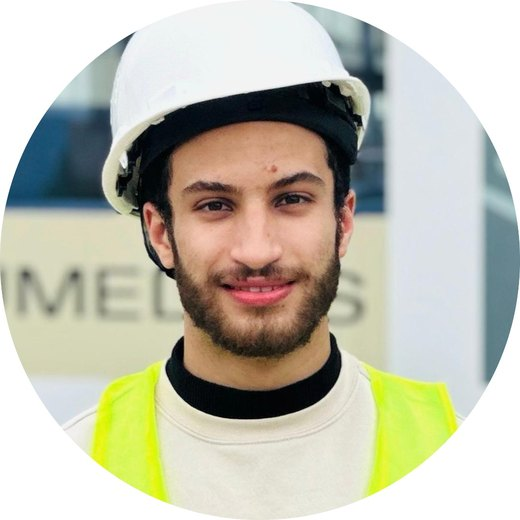
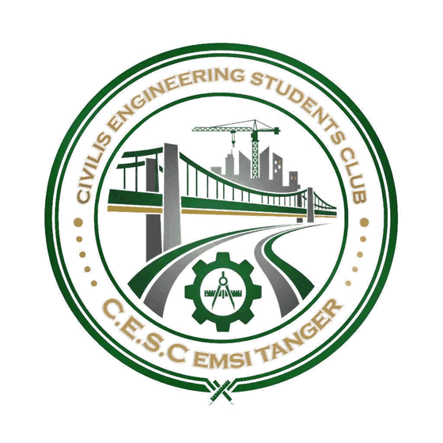

Youssef Belrhiti
Élève ingénieur en génie civil
École Marocaine des Sciences de l’Ingénieur (EMSI), Tanger
Stages, projet académique, vie associative et présentations
Je sais que votre temps est précieux.
Si vous en avez un peu, voici mon profil.

Élève ingénieur en dernière année de génie civil à l’École Marocaine des Sciences de l’Ingénieur (EMSI) de Tanger, je suis major de promotion chaque année depuis 2022. Mes cinq stages m’ont fait passer du chantier au laboratoire, puis au bureau d’études, où j’ai dimensionné la charpente métallique d’une usine. En parallèle, j’ai présidé CIVILIS, le club de génie civil de l’école.
Robot Structural Analysis, MATLAB, Abaqus, RDM7, AutoCAD, Covadis, Autopiste, ArcGIS
CM66, Eurocode 3, NV65, RPS 2011, BAEL 91, normes marocaines d’essais
Arabe (langue maternelle), français et anglais (avancé), russe (courant)
Sinon, voici l’essentiel.
4/4
années major de promotion à l’EMSI, depuis 2022
5
stages, du chantier au laboratoire puis au bureau d’études
3 675 m²
d’usine dont j’ai dimensionné la charpente métallique
CIVILIS
le club de génie civil de l’EMSI, que j’ai présidé
×3
participations à The Best Speaker, la compétition d’éloquence de l’EMSI
4
langues : arabe, français, anglais et russe
Du chantier au laboratoire,
puis au bureau d’études.
- CHBAYTI FOR YOUStage d’observation sur le chantier d’une villa · 202304
- CHBAYTI FOR YOUStage chantier, bâtiment R+3 · 202405
- LABENTREPRISE JGHLaboratoire et centrale à béton · 202406
- LABLABO CONTROLEssais géotechniques in situ et en laboratoire · 202507
- BETANGER MED ENGINEERINGBureau d’études, charpente métallique d’une usine · 202608
- PAMAQUETTE D’UNE VILLAProjet académique, maquette faite à la main09
- VACIVILISClub de génie civil de l’EMSI Tanger, ancien président10
- VATHE BEST SPEAKERCompétition d’éloquence, trois participations11
- PRPRÉSENTATIONSSimulation de la Gen Z en communication, Digital Detox en rap en anglais12
En parallèle, la formation
- 2024 → 2027CYCLE INGÉNIEUR, GÉNIE CIVILEMSI Tanger, major de promotion en 1re et 2e année
- 2022 → 2024CYCLE PRÉPARATOIREEMSI Tanger, major de promotion
Août à septembre 2023
BAYTI FOR YOU
Stage d’observation sur le chantier d’une villa
Ce stage a été mon premier contact avec un chantier, celui de la construction d’une villa. J’ai délimité la zone d’implantation à l’aide d’un appareil de mise à niveau, puis j’ai suivi les travaux de terrassement et la réalisation du rez-de-chaussée, des poteaux jusqu’au plancher à corps creux.
En bref
- Implantation
- Terrassement
- Poteaux du RDC
- Plancher à corps creux
Juillet à août 2024
BAYTI FOR YOU
Stage chantier, bâtiment R+3
De retour chez BAYTI FOR YOU, j’ai suivi les travaux d’un bâtiment R+3, des fondations jusqu’aux éléments porteurs : semelle filante, ferraillage et coffrage des poteaux, puis pose de la dalle. Ce stage m’a montré sur le terrain l’importance d’une exécution soignée pour la qualité de la structure.
En bref
- Semelle filante
- Ferraillage
- Coffrage des poteaux
- Pose de la dalle
Juillet à août 2024
ENTREPRISE JGH
Stage en laboratoire, béton et granulats
Ce stage s’est déroulé entre le laboratoire et la centrale à béton de l’entreprise, autour du contrôle de la qualité du béton. J’ai réalisé les essais sur les granulats (équivalent de sable, bleu de méthylène, analyse granulométrique) et sur le béton (affaissement au cône d’Abrams, compression), et j’ai confectionné les éprouvettes. J’ai également appris le mode opératoire de la centrale, du dosage des constituants jusqu’à la fabrication du béton.
En bref
- Équivalent de sable
- Bleu de méthylène
- Granulométrie
- Cône d’Abrams
- Compression
- Centrale à béton
Juillet à août 2025
LABO CONTROL
Essais géotechniques in situ et en laboratoire
Ce stage s’est inscrit dans une étude géotechnique, menée en deux temps. Sur site, j’ai participé aux reconnaissances du sol : sondage carotté, prélèvement des échantillons et essai pressiométrique Ménard. Au laboratoire, j’ai ensuite réalisé les essais d’identification des sols et de qualité des granulats, selon les normes marocaines.
En bref
- Sondage carotté
- Prélèvements
- Pressiomètre Ménard
- Identification des sols
- Qualité des granulats
Essais in situ
Essais de laboratoire
Essais réalisés et normes de référence
| Essai | Norme |
|---|---|
| Los Angeles | NM EN 1097-2 |
| Micro-Deval | NM EN 1097-1 |
| Équivalent de sable | NM 10.1.732 |
| Limites d’Atterberg | NM 13.1.007 |
| Teneur en eau | NM 13.1.152 |
Juillet à août 2026
TANGER MED ENGINEERING
Stage de perfectionnement, bureau d’études
Au sein du bureau d’études de Tanger Med Engineering, j’ai conçu et dimensionné la charpente métallique d’une usine de 3 675 m² pour JH Precision, à la Cité Mohammed VI Tanger Tech. J’ai évalué les actions (charges d’exploitation selon la NM EN 1991-1-1, vent selon les règles NV65 et séisme selon le RPS 2011), modélisé la structure sous Robot Structural Analysis et vérifié les éléments au CM66 jusqu’aux assemblages. J’ai enfin validé les résultats par un modèle éléments finis que j’ai développé sous MATLAB.
En bref
- NM EN 1991-1-1
- NV65 (vent)
- RPS 2011 (séisme)
- Robot Structural Analysis
- CM66
- MATLAB
Chiffres clés du projet
3 675 m²
usine en acier S275, 74,40 × 49,40 m, faîtage à 10,50 m
498
barres dans le modèle Robot
0,93
taux de travail maximal après optimisation, contre 1,69 au départ
Modèle éléments finis et rapport
Pour valider les résultats de Robot, j’ai développé sous MATLAB un modèle éléments finis qui reprend les vérifications au CM66 : flambement, déversement, élancements, second ordre et flèches. J’ai ensuite rédigé le rapport complet du projet sous LaTeX.
Projet académique · EMSI Tanger
MAQUETTE D’UNE VILLA
Maquette faite à la main
Projet de conception d’une villa, de l’organisation des espaces jusqu’à la maquette finale avec ses aménagements extérieurs, entièrement réalisée à la main.
En bref
- Organisation des espaces
- Façades et ouvertures
- Aménagements extérieurs
- Maquette à la main
Club de génie civil · EMSI Tanger
CIVILIS
Ancien président
J’ai présidé CIVILIS, le Civil Engineering Students Club de l’EMSI Tanger. Avec l’équipe, nous avons rapproché les étudiants du terrain et du métier d’ingénieur en organisant des sorties pédagogiques, des séminaires, des formations, des podcasts et des compétitions.
En bref
- Sorties pédagogiques
- Séminaires
- Formations
- Podcasts
- Compétitions

Clubs de l’EMSI · Trois participations
THE BEST SPEAKER
Compétition d’éloquence
J’ai participé trois fois à The Best Speaker, la compétition d’éloquence organisée par les clubs de l’EMSI. Convaincre un public en quelques minutes m’a appris à structurer un message et à gérer le stress, ce qui me sert aujourd’hui pour présenter une étude ou une note de calcul.
En bref
- Structurer un message
- Gérer le stress
- Convaincre un public
Deux présentations qui m’ont marqué · EMSI Tanger
PRÉSENTATIONS
En communication professionnelle et en anglais
Communication professionnelle
LA GEN Z AU MAROC
Simulation des manifestations, jouée en classe
Pour cette présentation, j’ai simulé les manifestations de la Gen Z au Maroc avec des camarades de classe. Nous avons joué la scène en direct, pancarte à la main et chacun dans un rôle, sous les applaudissements de la salle.
En bref
- Mise en scène
- Travail en équipe
- Sujet d’actualité
Anglais
DIGITAL DETOX
Exposé en anglais et performance de rap
En anglais, j’ai traité le sujet du Digital Detox en mêlant la présentation à une performance de rap. Le rap m’a permis d’aborder le sujet avec ironie, tout en restant objectif sur le fond.
En bref
- Présentation en anglais
- Performance de rap
- Ironie et objectivité
Merci d’avoir pris le temps.
Pour échanger sur un projet ou sur mon parcours, écrivez-moi.
Portfolio de Youssef Belrhiti · 2026